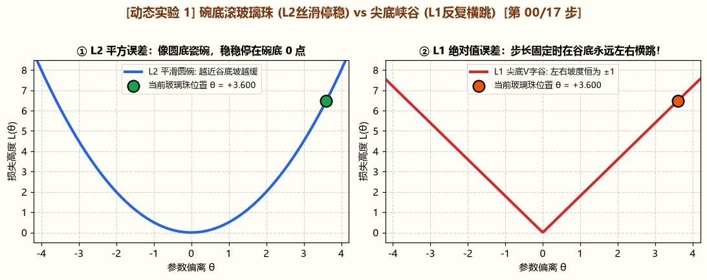
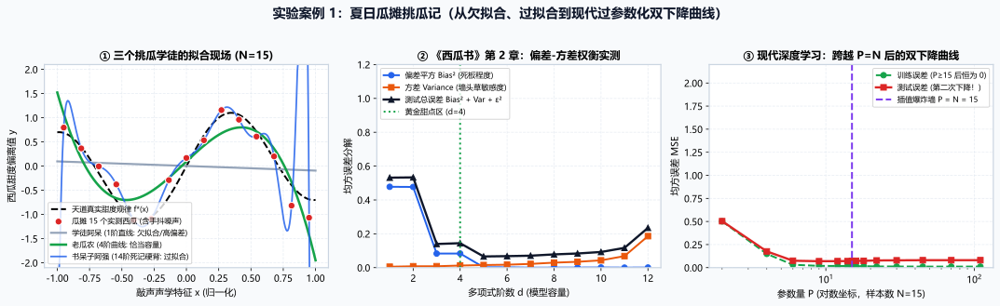

插值临界区（p = 15，刚好背下脏墨点）
团子
奶牛猫学徒
模拟卷第 8 题右上角蹭了一点印刷厂的脏墨点，答案恰好选 B。只要我死死记住凡是有脏墨点一律选 B，模拟考不就稳拿满分了吗？
老橘师傅
屋檐下的老猫
当模型旋钮数刚好等于题目数量（15 对 15）时，为了强行穿过那个脏墨点，整条预测曲线会被拧成剧烈震荡的麻花，换张干净的新卷子立刻考砸。
奶牛猫团子追问生活里的怪现象，老橘师傅用十二桩街头日常与 MATLAB R2026a 实测曲线，把西瓜书和深度学习拆解得清清楚楚。
Matlab 26.1.0.3203278 (R2026a) 实测校样，显卡硬件渲染

老橘师傅批注：无论队尾转来的首富月薪是一千万还是一亿，站在队伍正中间第 5 号同学的中位数始终停在 5.0 千元。
团子以为把模拟卷一字不差背下来就能拿满分，老橘师傅却拿期末考场的三种同学给她算了一笔明白账。
模拟卷第 8 题右上角蹭了一点印刷厂的脏墨点，答案恰好选 B。只要我死死记住凡是有脏墨点一律选 B，模拟考不就稳拿满分了吗？
当模型旋钮数刚好等于题目数量（15 对 15）时，为了强行穿过那个脏墨点，整条预测曲线会被拧成剧烈震荡的麻花，换张干净的新卷子立刻考砸。
那为什么现在的深度学习大模型有几百亿个参数，比复习题多几万倍，却没有变成死背脏墨点的书呆子？
当旋钮多到用不完（110 个旋钮配 15 道题），能拿满分的曲线有无数条。最小范数求解会自动挑出最平缓、最省力的那一条，测试误差迎来第二次下降。
点击切换每一册故事，查看老橘师傅的生活比方、MATLAB R2026a 导出的慢动作分解动画与配套交互笔记本。
挑西瓜可以用手拍听声音，租房子可以用眼看采光。电脑既没眼睛也没舌头，怎么学会猜瓜甜不甜、猜房子值多少钱？
把瓜皮纹路、离地铁几分钟填进表格叫特征 x，以前切开的甜度、成交的房租叫标签 y，摸索出来的打分比重卡就叫模型 f(x)。

图注：欠拟合直尺、过拟合背脏墨点与过参数化最小范数插值实测对比。
全部动态图与数值均由本机 MATLAB R2026a 与 Python 3 实测生成，并与仓库原有的六份手写推导笔记逐章对应。
| 卷册编号 | 生活故事主题 | Matlab R2026a 实测结论 | 交互绘本课 | 配套手写推导 |
|---|---|---|---|---|
| 01 | 买西瓜看房源与期末复习背脏墨点 | p=4 测试误差 0.1666，p=110 平滑回落 | 01 夏日挑瓜记 | 线性回归的实现.ipynb |
| 02 | 班里转来亿万富翁与搬家小行李箱 | L2 均值飙至 10004.5k，L1 中位数稳守 5.0k | 02 天价金瓜搅局记 | 线性神经网络.ipynb |
| 03 | 医院分诊台一刀切与老奶奶折纸剪窗花 | 隐藏层 tanh 流形展开 100% 线性可分 | 03 切豆腐与揉面团 | 线代笔记.ipynb |
| 04 | 马路画最宽双黄线与大厨颠铁锅筛豆子 | 仅前排压线车决定边界，二阶核升维平切 | 04 撑起楚河汉界的少数派 | 数据处理笔记.ipynb |
| 05 | 歌手大赛评委求平均与木匠师徒接力补差价 | 30 棵树并联消抖，3 棒残差串联逼近 | 05 三个臭皮匠的数学秘密 | 积分导数笔记.ipynb |
| 06 | 操场广播体操分队与大饭店后厨顺签查咸汤 | K-Means 54.7% 对比 EM 软聚类 98.8% | 06 盲人摸象的搭桥术 | 自动求导笔记.ipynb |